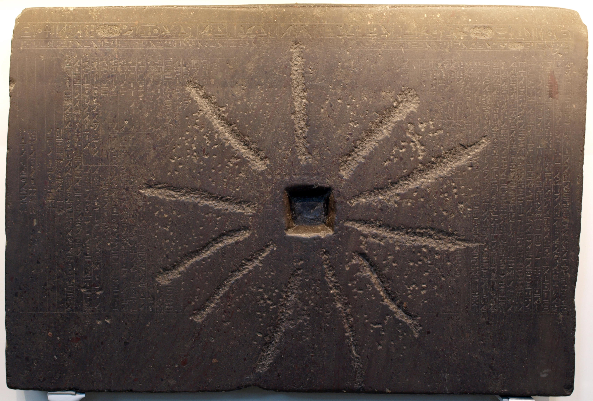

Shabaka Stone

A black granite slab (British Museum EA 498), about 95 by 137 cm, inscribed under the Kushite pharaoh Shabaka of the Twenty-fifth Dynasty with the Memphite Theology: Ptah creates all things, including the other gods, through his heart (thought) and his tongue (speech). The stone claims to copy a worm-eaten older papyrus found in the temple of Ptah; it was later reused as a millstone, which obliterated much of its centre. Donated to the British Museum in 1805, it was first deciphered by James Henry Breasted in 1901.
Interpretations
Scholars agree the stone itself dates to Shabaka's reign; the stone's own claim to copy a very ancient document is debated, with most scholars now dating the composition no earlier than the New Kingdom and treating the 'rescued ancient document' as a royal or literary device.
Scripture Illuminated
Biblical Significance
Creation by spoken word is the Shabaka Stone's central idea, and it forms a striking pagan parallel and contrast to Genesis 1, where God creates by saying, and to John 1, where all things are made through the Word. The stone shows that the ancient world already wrestled with creation through thought and speech, while Scripture alone names the one true Creator speaking.